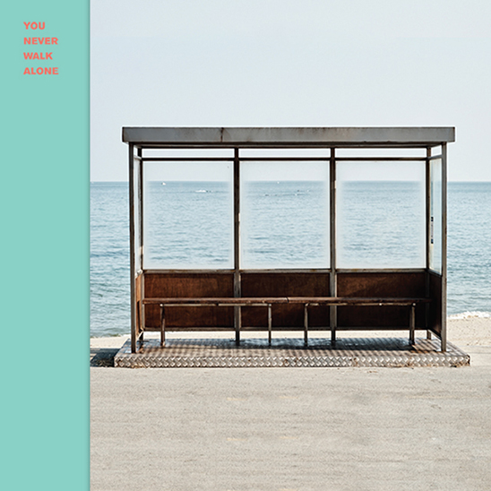
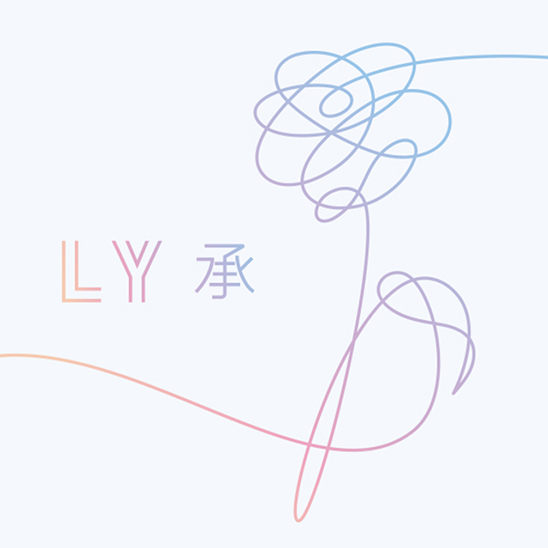

Now things start to get a little crazy… okay very crazy. Even though BTS were finally reaching major milestones in South Korea, the more notable growth was in America where they became the first Korean act to sell out arenas (and within minutes too). The demand was so high for their Wings Tour, two more dates were added to the US leg. They attended the 24th Billboard Music Awards afterwards and won Top Social Artist, breaking Justin Bieber’s six year winning streak and becoming the first Korean group to be awarded at the Billboard Music Awards. The winner is determined by a combination of fan votes and level of interactions on social media and streaming. Twitter being a primarily Western platform, it's astonishing how BTS managed to break into the market through sheer ARMY power, no American ties or label and little to no radio play. US companies had more incentive to invite BTS onto their shows now that the numbers proved beneficial from televised views, Youtube views and ticket sales. BTS were popping up everywhere including Jimmy Kimmel Live!, The Ellen DeGeneres Show and The Late Late Show with James Corden.
With this scale of influence, BTS decided to start their philanthropic journey. In partnership with the Korean and Japanese UNICEF committees, BTS launched a two year campaign called Love Myself in November to end violence against youth. Since many of their songs deal with topics of mental health, self love, suicide, friendship and female empowerment, this campaign was fitting. Big Hit Ent. and BTS themselves collectively donated KR₩ 500 million (around 600 thousand CAD). Additionally, 3% of all income from physical album sales from the Love Yourself series and 100% of Love Myself merch sales went towards this campaign. Combined with outside donations, the total funds raised to date amount to KR₩ 3.2 billion (3.6 million CAD).
|  | |
|---|---|
| 2nd Special Album | You Never Walk Alone |
| Genres | Hip hop · R&B · Dance-pop · Pop |
| About | This album is a repackage of Wings and includes additional songs that provide a message of warm consolation and hope for the young generations. It includes feminist track "21st Century Girl", and "Not Today" which encourages never giving up. |
| Song: Stigma | |
|  | |
|---|---|
| 5th Mini Album | Love Yourself 承 'Her' |
| Genres | Pop · R&B · Hip hop · EDM · Electro pop |
| About | BTS expresses the anxiety and elation of love in a cheerful coming-of-age tale. One of the tracks, "Go Go" mocks material culture while "Pied Piper"is a playful track about their fans. |
| Song: Go Go | |
Their single “Spring Day” crashed Melon’s digital chart because of a sudden increase in user traffic. It won Best Song of the Year at the MMAs and is the longest-charting song on Melon to date.
Commenced their second world tour, The Wings Tour, visiting twelve countries including Brazil, Australia, Japan, Hong Kong, and the United States.
Performed at the opening night of the first-ever KCON Mexico.
K-pop icon Seo Taiji praised BTS, and passed the generational torch to them.
Released Love Yourself: Her, the first of their “Love Yourself” album series which includes collaborations with the Chainsmokers, Steve Aoki and Desiigner.
JJ Ryan was the first radio station in the U.S. to play their latest single, "DNA." BTS' songs increasingly gained radio play in the country this year due to the grassroot efforts of fans.
Line Friends announced BT21 collaborative line featuring characters inspired by BTS' artwork and creative ideas.
Became the first K-pop group to perform at the American Music Awards.
BT21 brought thousands of fans out to the opening launches of the product line in Seoul and New York City.
Performed at Dick Clark's New Year's Rockin' Eve with Ryan Seacrest.